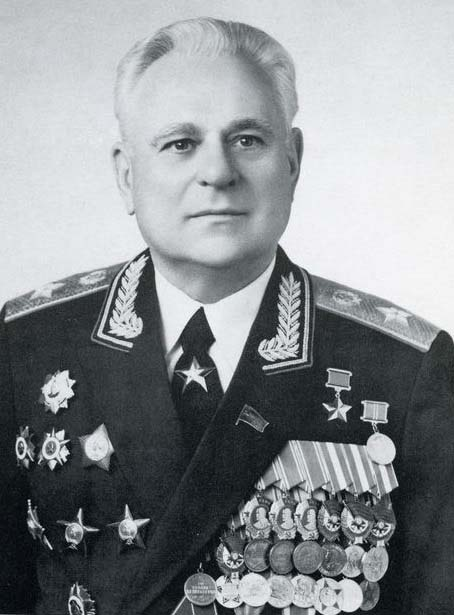

Он умер на 74 году жизни, не дотянув до своего бриллиантового юбилея чуть больше года. В некрологе, который дала «Красная Звезда», было сказано совсем немного: родился, учился, воевал, командовал… Такая лаконичность поминальных слов вполне соответствует характеру генерала – человека поразительной скромности и природной мудрости. Он не любил выспренность и словоблудие, полагая, сто слова – это шелуха, а соль всему – Дело. Делом была вся его жизнь.
Уже то, что Звезду Героя за бой под Москвой Евгений Филиппович получил только спустя сорок лет после войны, является существенной деталью. Никогда в жизни он не кичился своими подвигами и «не выбивал» себе награды. Даже находясь на высоких должностях и имея выход на «московские кабинеты».
Уже то, что Звезду Героя за бой под Москвой Евгений Филиппович получил только спустя сорок лет после войны, является существенной деталью. Никогда в жизни он не кичился своими подвигами и «не выбивал» себе награды. Даже находясь на высоких должностях и имея выход на «московские кабинеты».

Е.Ф. Ивановский (07.03.1918 - 23.11.1991)
Е.Ф. Ивановский (07.03.1918 - 23.11.1991)
Краснознаменный Белорусский военный округ Ивановский возглавил в конце 1980-го. С первых дней новый командующий с головой ушел в дела округа. Казалось, не было такого вопроса, в который не вникал бы Ивановский: боевая учеба войск и быт личного состава, трудоустройство жен офицеров и прапорщиков, торговое и медицинское обслуживание в отдаленных гарнизонах. Наконец, жилищная проблема. Такого масштабного строительства, какое было при Ивановском, округ после него больше не знал. Получить двухкомнатную квартиру в Минске можно было, практически не томясь в очереди. Но запомнилась не только эта деталь. Командующий строго следил за тем, как распределяется жилье, соблюдается ли очередность, не нарушается ли справедливость. До него с этим вопросом были проблемы.
1980-ые
Николай Куц вспоминает такой случай: «Офицер запаса, давно утративший связь с армией, но, будучи человеком весьма пробивным и предприимчивым, решил помочь своим взрослым деткам в улучшении быта. Предприняв ряд многоходовых комбинаций, он заявился в кабинет командующего с просьбой поспособствовать в получении квартиры. Ивановский выслушал посетителя, поблагодарил за какую-то услугу, глядя ему в глаза, спросил, не повышая голоса:
- Вы сами понимаете, на что толкаете меня? Я только навел порядок в жилищном вопросе, а вы предлагаете вернуться к тому, что было…
Очевидцы утверждают, что из кабинета Ивановского офицер выскочил как ошпаренный».
- Вы сами понимаете, на что толкаете меня? Я только навел порядок в жилищном вопросе, а вы предлагаете вернуться к тому, что было…
Очевидцы утверждают, что из кабинета Ивановского офицер выскочил как ошпаренный».
[Куц, Н. Человек мужества и чести: 85 лет Е.Ф.Ивановскому // 7 дней. – 2003. – 15.03. с.3]
1945 год, 9 мая
Несмотря на твердый характер, Евгений Филиппович обладал исключительной деликатностью. Он мог сделать человеку замечание или даже одернуть того, не напрягая голосовых связок и не унижая его личное достоинство.
Скромность Ивановского и его простота были общеизвестны. На службу и со службы он ходил непременно пешком. И хоть расстояние от домика командующего до штаба округа было не более километра, кто, находясь в такой должности, стал бы утомлять себя подобными регулярными прогулками? Бывая в войсках, он обедал вместе с остальными офицерами. Чтобы узнать, как кормят личный состав, часто подсаживался за солдатский стол. Кстати, в этой неофициальной обстановке получал от «бойцов» такую информацию, которую не могла «выудить» ни одна комиссия.
Скромность Ивановского и его простота были общеизвестны. На службу и со службы он ходил непременно пешком. И хоть расстояние от домика командующего до штаба округа было не более километра, кто, находясь в такой должности, стал бы утомлять себя подобными регулярными прогулками? Бывая в войсках, он обедал вместе с остальными офицерами. Чтобы узнать, как кормят личный состав, часто подсаживался за солдатский стол. Кстати, в этой неофициальной обстановке получал от «бойцов» такую информацию, которую не могла «выудить» ни одна комиссия.

1944 год
Примечателен и такой момент. Если жизнь заставляла Евгения Филипповича обращаться за помощью к подчиненным, то эту помощь он непременно оплачивал из своего кармана. Так, в 1984 году Ивановскому было предложено написать книгу воспоминаний о войне. В помощь Евгению Филипповичу была направлена группа журналистов. Они объездили все приграничные районы республики, встречались с их руководителями, бывали на местах боев, знакомились с музейными экспонатами. В апреле 1985 года вышла в свет книга «Победы немеркнущий свет». Каково же было удивление журналистов, работавших с Ивановским, когда в почтовой ящике каждого из них оказались денежные переводы от самого Евгения Филипповича на довольно крупные суммы. С припиской: «Спасибо за помощь».